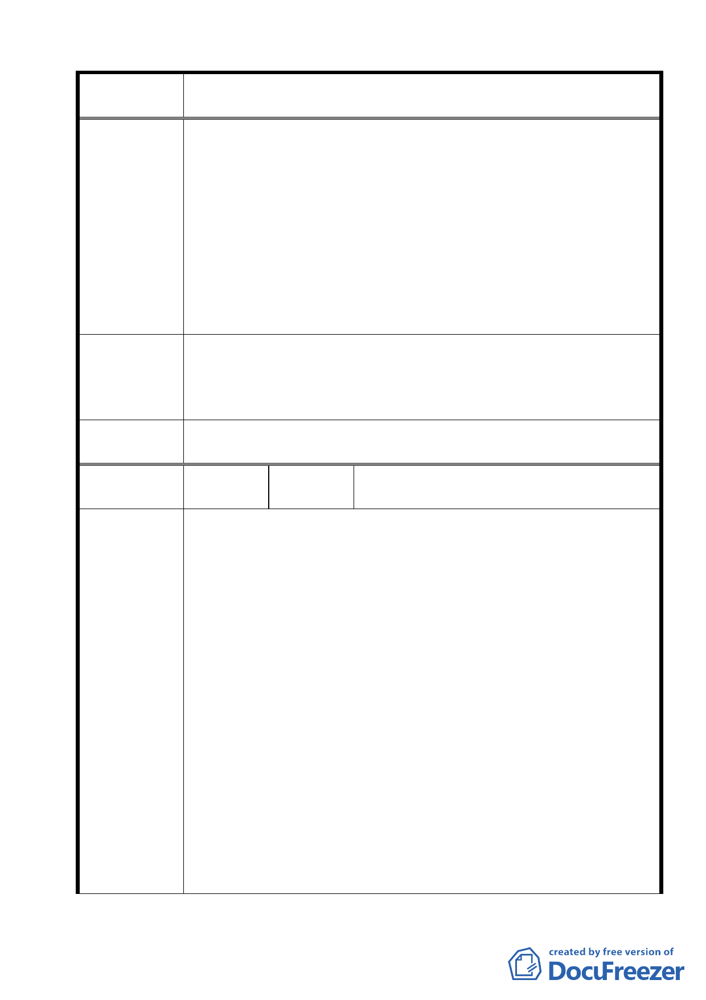

案名
建議辦法
委員會議
決議
編號
陳情理由
變更臺北市士林區陽明山山仔后地區第二種住宅區為特定住宅區
細部計畫案
家公園畢竟是國家公園級的觀光景點，非從社區生活尺度之需
而規劃，因此與一般社區鄰里的公共設施與綠地仍有落差，陽
明山區的居民需要社區層級的遊憩場所；加上本區有 40 多株台
北市受保護樹木，林木蒼鬱茂密，保留美軍宿舍作為公園綠地
有其必須性。
3.山仔后是陽明山區重要的交通樞紐，候車人次眾多，應於附近
規劃適當的相關交通轉運設施(如廁所、候車空間)，滿足在地居
民、學生、遊客與在地計乘車司機的需求。
4.劃設為公有之美軍宿舍用地，可考慮規劃陽明山農展展售地與
簡易醫療站，以滿足大陽明山區居民的生活需求。
1.全區原貌保留美軍宿舍。
2.規劃公園綠地。
3.規劃交通轉運設施。
4.規劃陽明山農展展售地與簡易醫療站
同編號 2 決議內容。
12
陳情人
台灣環境保護聯盟、中華民國專業者都市
改革組織、綠黨、山仔后文史工作室
1.人口方面：
文化大學總數兩萬餘名學生是排除於計畫考量範圍、然實
際造成山仔后社區極大環境外部性的隱形人口，加上每逢假日
陽明山上遊客如織，計畫中顯然對於本地區之特殊性並未審慎
考量：真正在山仔后地區「活動」的人口數早已遠超越原本的
設定，從單純降低容積率與建蔽率的做法，完全未觸及解決龐
大的文大學生所帶來的流動人口壓力，尤其在文大校方無法提
供適當宿舍條件、台灣銀行也禁止學生租賃的情況下，文大學
生在窘迫的住宿條件下更顯無辜而辛苦。
2.交通方面：
於現行道路系統及配套公共運輸方面，以細部計畫範圍切
割出山仔后地區，除了過去細部計畫通檢版本內曾列舉計畫道
路以外，山仔后地區地處自天母、仰德大道兩方上陽明山後交
通衝突/匯聚點，必須重新對該道路系統及配套軟體計畫進行檢
討，在整體交通網絡及其衝擊效應環環相扣的情況下，細部計
畫書所呈現內容顯得較為偏狹。
3.環境負載力方面：
文化大學兩萬多的流動人口除了造成擁擠、交通上的困擾
37